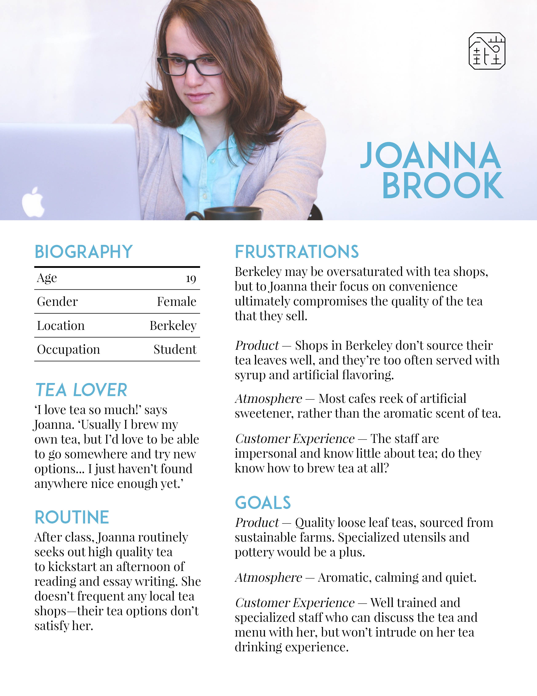
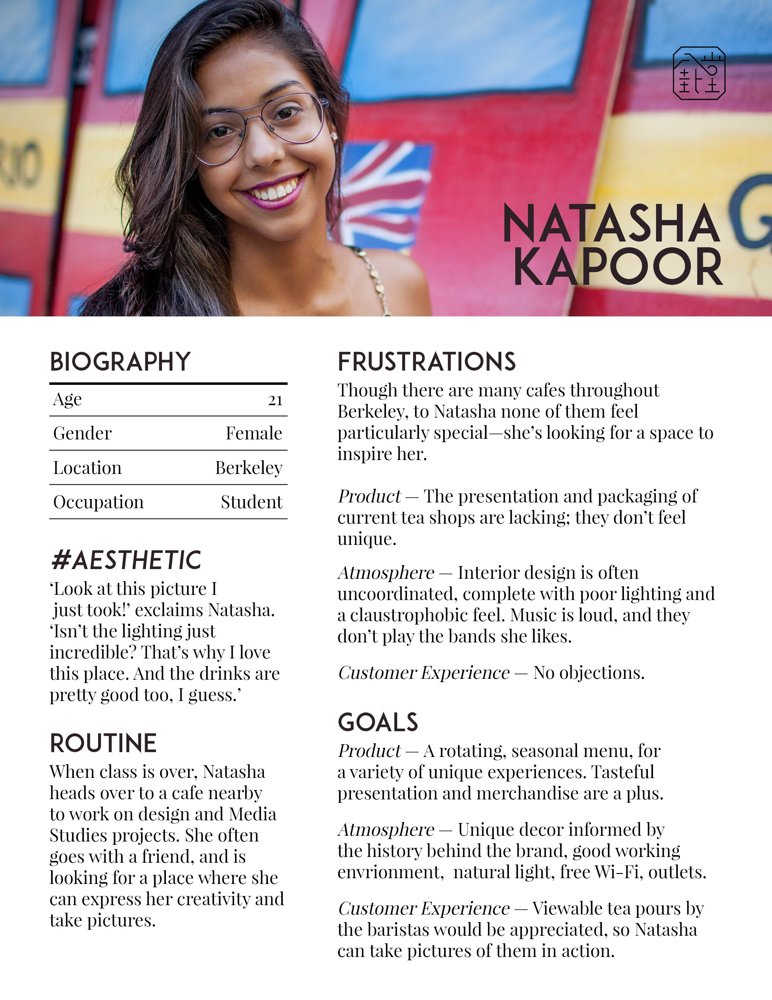
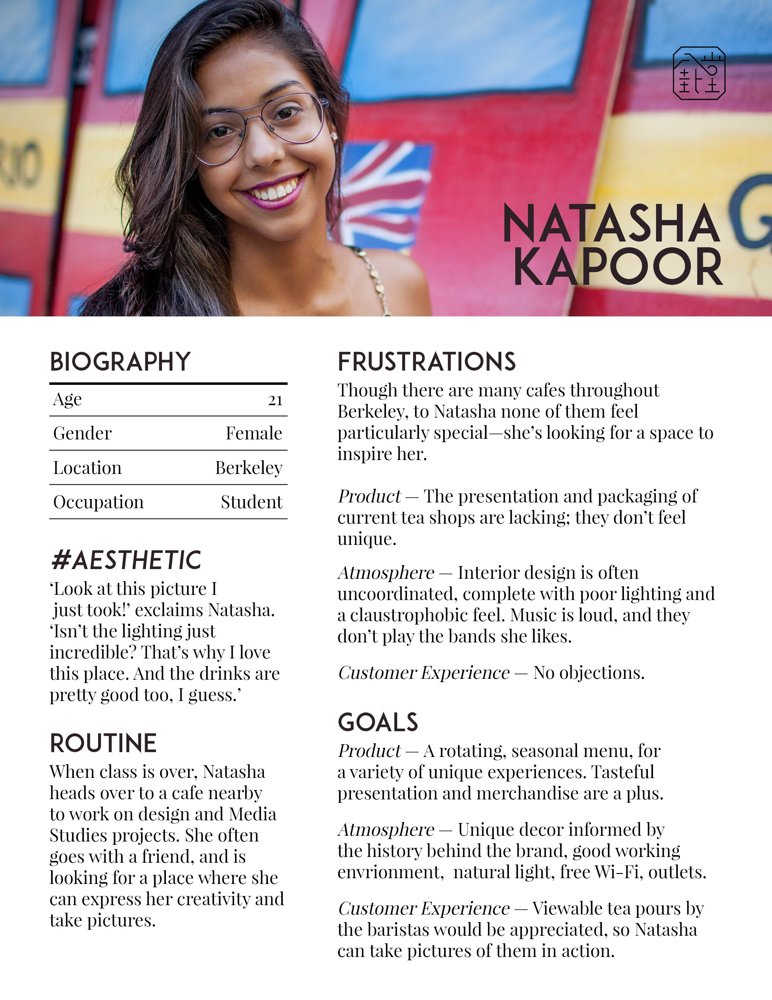
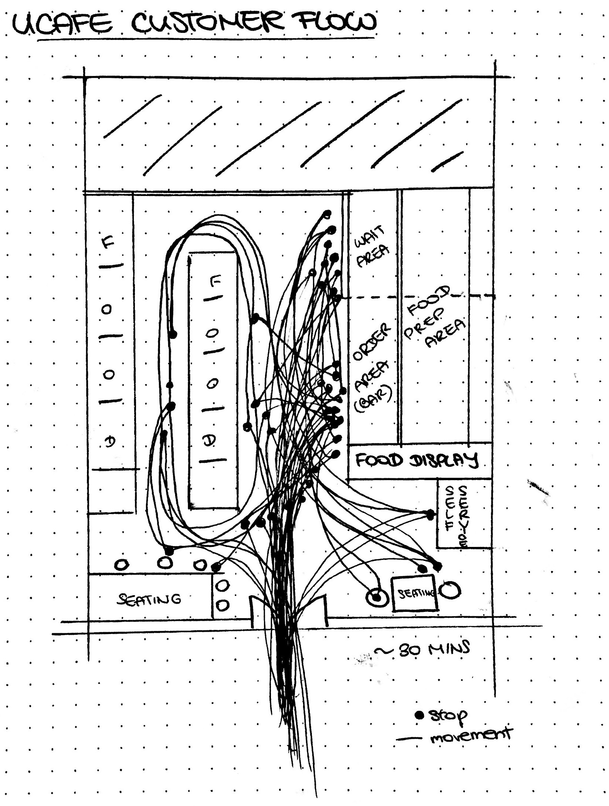
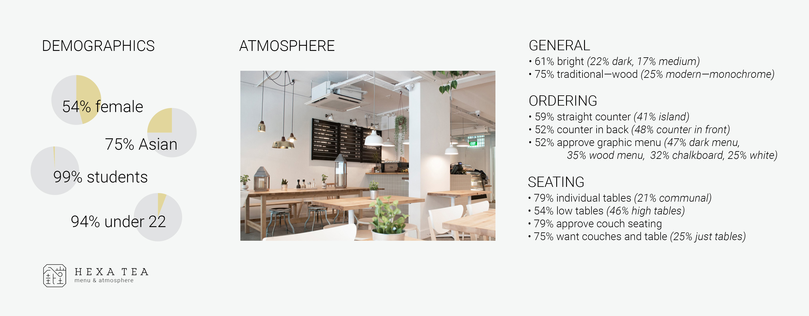
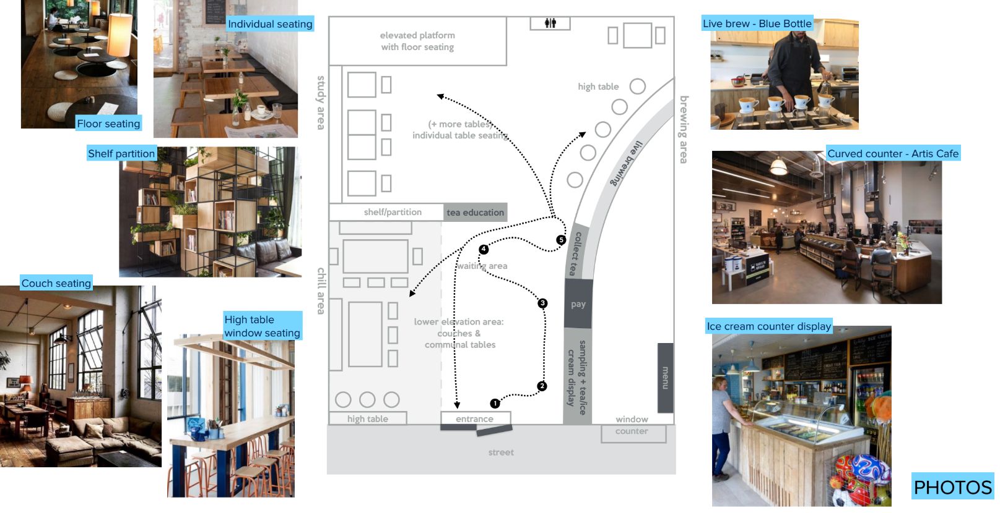
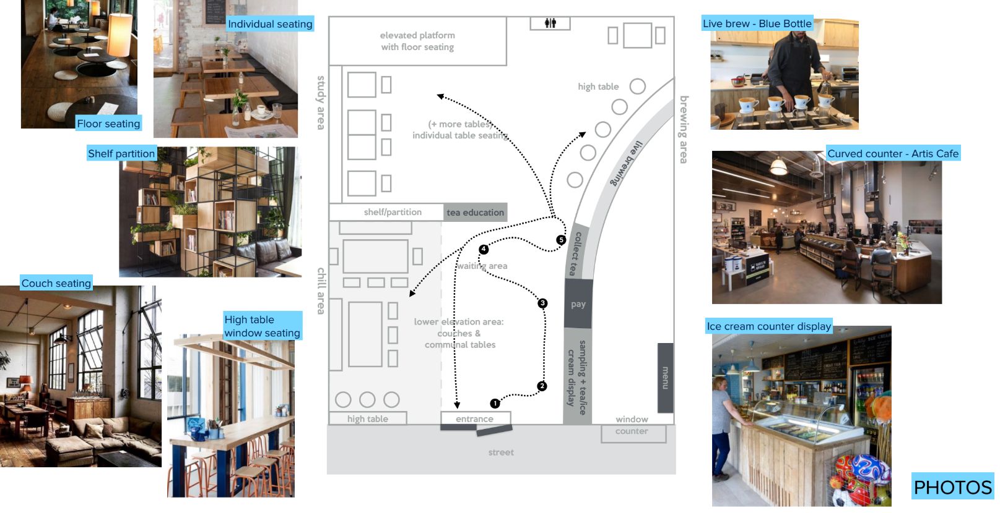

Hexa Tea
An innovative re-imagining of the tea experience.
The Abstract
In Fall 2016, through Berkeley Innovation, I served as a strategy and design consultant for Hexa Tea, a local startup at Berkeley, helping to open their first storefront. Our goal was to bring the richness of traditional tea culture to Berkeley in the form of a forward thinking cafe. I worked on a team with 4 others — Kathleen Hsu, Mimi Largier, Vanessa Ng, and Josephine Zschiesche. Through our research, we found was that there were very few cafes in Berkeley offering both a truly user first experience as well as a great product; in an effort to change this, we conducted identified market needs, defined and understood user problems, and designed a range of prototypes as part of our Hexa Tea product vision.
The Problem
The initial hypothesis was simple: there are no stores at Berkeley that sell truly great tea with a matching customer experience. Our client sought to change this — they had sourced a range of quality Taiwanese teas, and we were asked to design a complementary tea house experience. This was an exciting opportunity; a chance to not only refine the cafe experience, but to meet and identify user needs currently unfulfilled by cafe environments in Berkeley. With this premise, we developed a set of guiding questions:
- What ambiance and experience were customers expecting from a “tea house” and cafe?
- What pain points exist with current cafes at Berkeley?
- How could we incorporate traditional tea culture to improve user experience?
- Using this knowledge, how can we craft a unique and user focused experience for Hexa Tea?
Step 1: User Research
Our most immediate goal was to understand the existing cafe environments and how users interacted with them. To that end, our team employed a two-pronged approach to research.
The first approach was through interviews of our target market: the students and young professionals who comprise most of Berkeley. Over the course of the project, each member of our team conducted 12 directed in-person interviews over several rounds; we asked questions ranging from daily eating habits to issues with local cafes.
With these insights, I was able to create 3 primary customer archetypes. Each persona embodied a set of user needs and frustrations that we had identified in our target market. We referenced these personas throughout the project as a way to better empathize with our target users, and keep them at the forefront of our design. They were, as follows:
- Julia — the Tea Lover, seeking quality tea tasting and options.
- Daniel — the Hurried Student, looking for speed and convenience.
- Natasha — the Instagrammer, primary concerned with the shop’s aesthetic qualities.

 

The second approach to our research was to observe the existing cafe environments throughout Berkeley. The goal here was to examine user behavior in media res; how users interacted with existing spaces. To accomplish this, each member of our team visited different local cafes, taking notes on how physical space design, menu selection, and barista service affected the overall customer flow. The following observation was by Josephine at uCafe:


Step 1.5: User Research Continued & Synthesis
At this point, we ran into an issue. We had set out to define the “ideal” cafe experience, and though we were able to identify recurring pain points, our interviews yielded limited insight into how to create a truly great cafe experience. We needed a broader data set, and we needed to refocus on which elements Hexa Tea could provide a unique and exceptional experience in.
With this in mind, we sent out surveys through social media designed to reach a broader audience. These surveys contained picture comparisons of various cafe settings, choosen to reflect different elements of the experience (e.g. one set of pictures would ask quiz takers to choose between a brightly lit cafe environment and a dim, low light environment). In hindsight, this survey method was not ideal, as confounding variables within each photo may have influenced decisions. Nevertheless, this method did allow us to move forward with a clearer picture of what customers desired. The following is a summary of the survey results that I compiled:

Thus, we regrouped with our client to discuss which aspects we should focus on. Where before we had taken a bottom up approach, allowing user research to shape design decisions, now I suggested we examine the problem from the top down, asking ourselves which tangible elements we could improve upon. Ultimately, with the research we conducted and the goals developed with the client, we were able to create a wide range of prototypes, honing in on key elements of the HEXA cutomer experience. By the end of the project, we were able to present our client a comprehensive menu, several approaches to the in-store user journey, and guidelines for physical space design. The following sections elaborate on these processes.
Step 2: Creating the Menu
Our client originally presented us with a menu consisting of 4 teas that he had sourced, each offered in 4 configurations — hot, cold, ice cream, boba — for a total of 16 menu options. The limited selection was meant to convey confidence in the product, and to put the focus on high-quality traditional teas.
However, we quickly determined that this would not be sufficient. Throughout our interviews, we noted that many customers expected what we called “fruity teas”, such as the Peach Mango Tea from Starbucks, as well as tea lattes.
We decided to create a rotating menu of seasonal drinks with these “fruity teas”, meant to compliment the original menu. We also chose to modify the original menu, removing the ice cream in favor of hot and cold latte options. This, we felt, was the best way to maintain our commitment to traditional tea while offering a breadth of options. Eventually, the drink menu was finalized as follows:


Following the drink menu, we found that many students at Berkeley lacked a reliable breakfast option, as few stores seemed to provide the convenience and menu that students wanted on their way to class. Our client hoped that Hexa Tea would be able to pursue this market, and suggested a menu based on tea snacks served with tea around the world.
Given our time constraints, the iteration on this menu was rapid. We quickly identified a menu with our client that we believed would maximize convenience, while maintaining our cultural focus on the tea experience. Our interviews returned a positive response on this menu; many found that it was comprehensive while remaining accessible, which was our goal.
As a final touch, we connected the menu to a map of the world, stressing our commitment to international tea culture. The completed food menu can be seen here:

Step 3: Spatial Design Prototypes & A Cultural Atmosphere
Compared to the food and drink menu, creating a Spatial Design was a much broader, less tangible goal, and therefore harder to approach. We decided to tackle this problem by breaking down the concept of Spatial Design according to Hexa Tea's stated goals — to be reliable, efficent, customizable, and cultural. Informed by the user data we had collected, each member of our team ideated upon one of these categories, and we each produced a preliminary prototype based on our focus. Our ideas ranged from the practical (I thought of crowdsourcing a customizable store playlist) to the impractical (I also thought of providing an individualized directional sound dome above each table).
After diverging with our these individual focuses, we regrouped and converged, synthesizing the ideas that we had produced. Ultimately, we were able to create a prototype of tbe Hexa Spatial Design based on the best elements in each of our prototypes; this included a floor plan, material references, and general atmosphere. This prototype is shown here:
 



Unfortunately, due to time constraints, we weren't able to expand much further than this original prototype; our finalized plans were passed on to an interior design contractor.
Reflections: The HEXA Experience
This project was focused, first and foremost, on the collection of user data and market needs — the primary goal was always to create a deep and thorough understanding of our target users and their needs. As such, a lot of our deliverables were intangible quantifications, based on interviews and surveys. These were communicated constantly to our client throughout the project, and unfortunately cannot be easily displayed in this project write up.
From this project, I gained invaluable experience in conducting user research, understanding user flows, and seeing a product from conception to completion. The first store should be opening soon!
This project was also my first extensive design project, and it was almost frightening in the breadth of the initial problem. Ultimately, I felt I did a good job managing my responsibilities and leading at crucial points. It was an exciting project, and I think that we were able to produce deliverables that could not only be implemented immediately, but also form a foundation for Hexa Tea's future brand development.